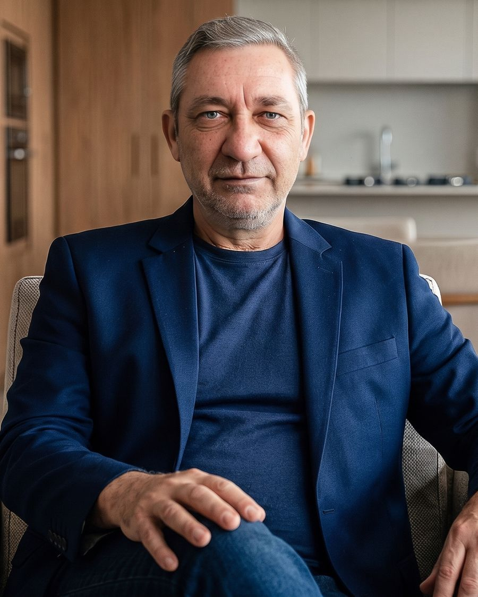
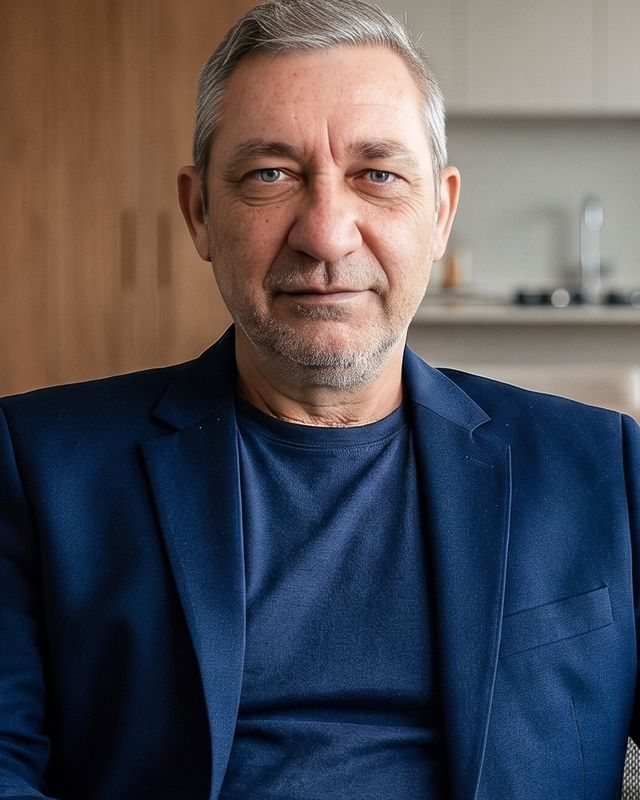

Mente e corpo juntos
Olho para a saúde emocional e para o que ela provoca no corpo, ao mesmo tempo: o sono, a tensão, a respiração.
Com a hipnose clínica e a programação mental, você encontra um espaço seguro para desligar o alerta constante, ressignificar a origem da ansiedade e voltar a viver com leveza e presença.

A ansiedade acelera os pensamentos, tira o sono, trava as decisões e cobra do corpo. Veja se alguma destas cenas faz parte da sua rotina:
A preocupação pula de um assunto para outro o dia inteiro, mesmo quando está tudo bem. Quem tem diagnóstico de TAG costuma descrever exatamente isso.
O corpo deita exausto e a mente acorda. Você demora a pegar no sono, desperta de madrugada e levanta sem energia.
Ombros travados, dor de cabeça, aperto no peito. Muitas dores pioram nas semanas mais tensas.
Você sabe o que precisa fazer e adia. A agitação por dentro não deixa começar, e a culpa de ter adiado aumenta a ansiedade.
Com dinheiro, tempo ou oportunidades, existe sempre a sensação de que vai faltar, mesmo quando as contas mostram outra coisa.
A cada tensão, um cigarro. Você já tentou parar, e a vontade volta justamente nos dias mais ansiosos.
O que você sente não é fraqueza, e esses sinais não são um diagnóstico. Força de vontade sozinha costuma não dar conta, por isso trabalho a origem, no ritmo que for possível para você.
Ansiedade, insônia, procrastinação, dores e o hábito de fumar costumam alimentar uns aos outros. Em cada encontro, escolho a combinação que faz sentido para o momento que você está vivendo.
Olho para a saúde emocional e para o que ela provoca no corpo, ao mesmo tempo: o sono, a tensão, a respiração.
Trabalho as crenças e as associações automáticas que mantêm o ciclo, como a sensação de escassez, a vontade de fumar ou a mente que acelera na hora de deitar.
Vai além dos sintomas e trabalha a causa raiz da dor emocional, onde a ansiedade e os padrões começam. Você continua consciente o tempo todo.
Entender o que dispara as crises e trabalhar essas reações, em vez de só apagar incêndios.
Perceber o ciclo da procrastinação, do cigarro ou da escassez e criar outra resposta.
Desacelerar a mente para dormir melhor e dar ao corpo o tempo de que ele precisa.
Se algum destes temas faz parte da sua vida, a consulta de avaliação é o lugar certo para começar: com escuta, calma e nenhum julgamento.
Conversamos sobre o que você está vivendo e vemos juntos se a hipnoterapia faz sentido para o seu caso. Nessa consulta também aplico uma técnica de liberação emocional, e muitas pessoas relatam melhora já nesse primeiro encontro.
Com base no que surgiu na avaliação, escolho os focos do trabalho e a combinação de técnicas que faz sentido para o seu caso.
Consultas presenciais em Uru ou online, com hipnose clínica e programação mental, respeitando o seu tempo.
De tempos em tempos, olhamos juntos para o que já mudou no sono, nas reações e no dia a dia, e ajustamos o plano quando for preciso.
Uma sala reservada para o seu atendimento.

Hipnoterapeuta Master®, especialista em ansiedade
Eu sou Silvio Papp, hipnoterapeuta. Tenho 55 anos de idade e atuo na área da saúde há mais de 27 anos. Antes, cuidava da recuperação física dos meus pacientes, atuando como fisioterapeuta. Decidi migrar para a hipnoterapia para atuar mais profundamente na saúde mental dos pacientes.
Não. Você permanece consciente, ouve tudo e pode interromper a consulta quando quiser.
Depende do seu caso e dos seus objetivos. Na consulta de avaliação você recebe uma estimativa, que pode mudar nas revisões.
Não. Atendo presencialmente em Uru (SP) e também online, por videochamada [a preencher: plataforma, ex.: Google Meet, e se atende todo o Brasil ou também o exterior].
Sim, esses são os temas principais do meu trabalho. Outros temas são avaliados com sinceridade na primeira conversa. A hipnoterapia não substitui acompanhamento médico, psicológico ou psiquiátrico.
Não. Ela é o ponto de partida: é nela que montamos o plano, e o trabalho continua nas consultas seguintes.
Não existe prazo garantido, e as respostas variam de pessoa para pessoa. Ao longo do acompanhamento, observamos juntos o que muda no seu sono, nas suas reações e na sua rotina.
Valor, duração e formato são informados no primeiro contato, pelo WhatsApp.
A hipnose clínica é usada como apoio para quem decidiu parar: trabalha os gatilhos de cada cigarro, a associação entre fumar e aliviar a ansiedade e a forma de lidar com a vontade quando ela aparece. A decisão de parar precisa ser sua. Se você usa medicação ou reposição de nicotina, converse com o seu médico e não interrompa nada por conta própria.
Ela pode apoiar quem convive com a preocupação constante e com as reações do corpo à ansiedade. O diagnóstico e o tratamento do TAG são feitos pelo médico ou psicólogo, e a hipnoterapia entra como complemento.
A hipnose trabalha a tensão e a forma como o corpo reage ao estresse, o que influencia muitas dores. É um complemento: toda dor precisa de avaliação médica, e nenhum tratamento deve ser interrompido.
É um trabalho feito em hipnose para preparar a mente para a hora de deitar: desacelerar os pensamentos, associar a cama ao descanso e criar um ritual simples para repetir em casa. Insônia frequente também merece avaliação médica.
É a ideia automática de que vai faltar dinheiro, tempo ou oportunidade. Ela pesa nas decisões e alimenta a ansiedade. Nas consultas, trabalhamos de onde vem essa sensação e como ela aparece no seu dia a dia.
Não. Não interrompa tratamentos nem altere medicações sem falar com o profissional de saúde responsável.
Mande a sua dúvida pelo WhatsApp. Eu mesmo respondo, com calma.
Perguntar no WhatsAppNa consulta de avaliação, entendemos juntos a origem do que você sente. O primeiro passo está a um clique.
Quero agendar minha consulta